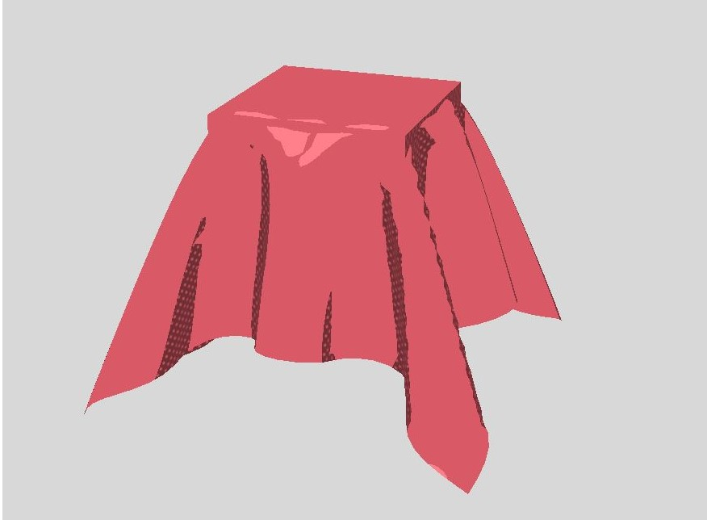
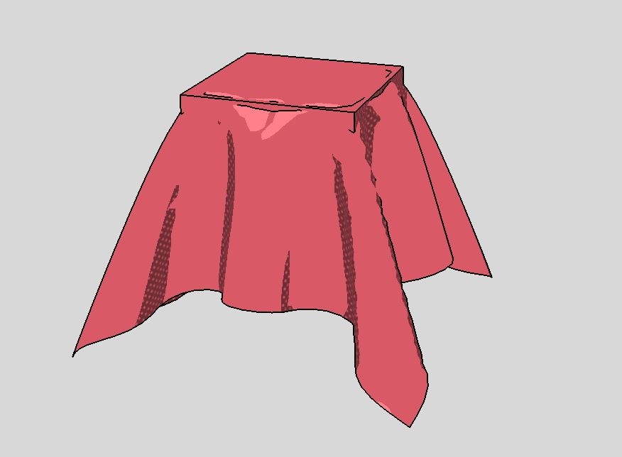
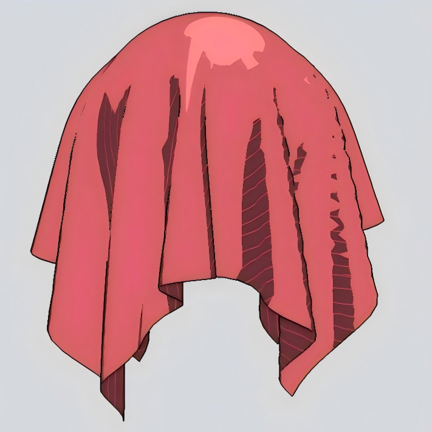
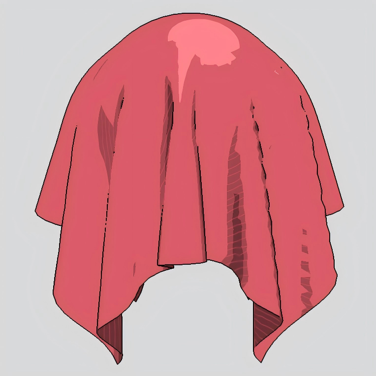
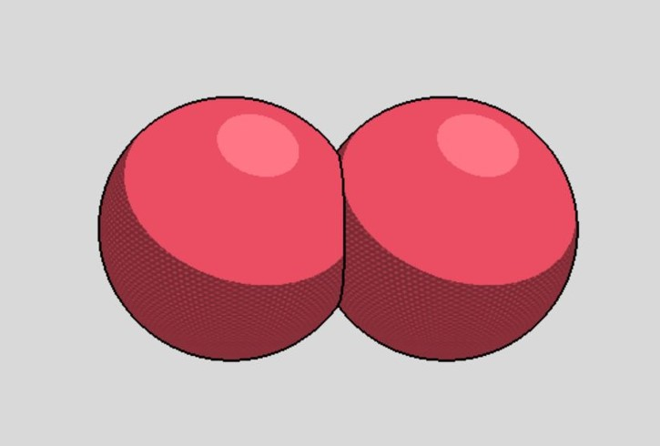
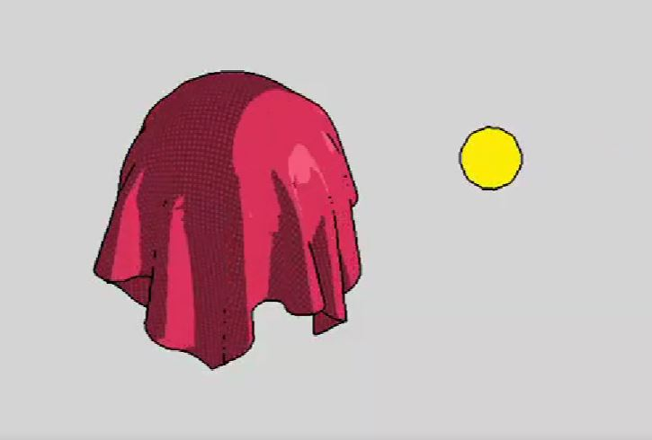

Abstract
We present the milestone progress for Fifty Shades of Cel, a real-time non-photorealistic rendering pipeline for 2D/3D hybrid cel shading. Built on top of the HW4 cloth simulator's OpenGL framework, our system implements a two-pass rendering pipeline: a cel shading pass that computes quantized lighting bands with pattern textures, followed by a fullscreen post-process edge pass that detects silhouettes and feature lines from depth and normal buffers. We also provide a live GUI for interactive parameter tuning and shader export to Unity HLSL.
Technical Approach
Our implementation is organized as a two-pass rendering pipeline with interactive parameter control.
Rendering Pipeline Overview
In the first pass, the scene is rendered into an offscreen framebuffer (FBO) that stores color, normal, and depth buffers using the cel shader. In the second pass, a fullscreen edge shader reads these buffers and composites detected outlines over the cel-shaded result.
Cel Shader
The cel fragment shader performs the main toon-shading computation. It first samples a
pattern texture in UV space, tiled by a configurable scale parameter. It then computes
N·L from the world-space normal and light direction, remaps this lighting value
using a dark threshold, and quantizes it into discrete shadow bands using
floor(). The shader applies the pattern texture to dark bands, modulated by a
shadow-strength parameter, and adds a highlight band above a separate bright threshold. The
pass outputs both the final cel-shaded color and an encoded normal buffer for the later edge
pass.
Edge Detection
The fullscreen edge shader runs as a post-processing pass over the FBO outputs. For each pixel, it samples neighboring depth values to detect outer silhouettes and object-background boundaries, and samples neighboring normals to detect internal feature lines such as folds and creases. The resulting edge mask is composited over the color buffer from the first pass.
GUI and Parameter Control
All cel-shading parameters are exposed through a live GUI with per-frame updates. These include base, dark, and bright colors; dark and bright thresholds; shadow strength; highlight strength; number of bands; pattern texture scale; and light direction. The current implementation also supports saving and loading cel-shading presets and exporting tuned parameters as Unity HLSL shader files.
Scene and Lighting Support
The pipeline supports rendering multiple overlapping objects with correct depth compositing. Rigid geometry (spheres, planes, cubes constructed from individual faces) and deformable cloth meshes can coexist in the same scene. We added UV math corrections to ensure pattern textures scale correctly on planar geometry.
For lighting, the system supports both directional and point light sources. Point lights can be set to orbit the scene automatically, which is useful for previewing how the discrete shading bands respond to changing light directions.
Preliminary Results
Our pipeline is functional and produces cel-shaded renderings across several scene configurations.







The system supports multiple overlapping objects with correct depth compositing and edge detection. Scenes can include both rigid geometry (spheres, planes, cubes) and deformable cloth meshes. Point lights with animated orbiting are supported, and all shading parameters can be adjusted interactively through the GUI.
Evaluation Plan
We plan to evaluate our system along three axes:
Visual Quality
We will compare our cel-shaded output against standard Phong shading on the same scenes, and conduct ablation studies by incrementally enabling each pipeline component (cel shading only, edge detection only, full pipeline) to verify each component's individual contribution.
Performance
We will measure frame time and frame rate across scenes of increasing triangle count and object complexity, and report the per-pass overhead (cel shading pass vs. edge detection pass) relative to the baseline Phong renderer.
Flexibility
We will demonstrate parameter tunability by rendering galleries with varying band counts, edge thicknesses, color palettes, and light configurations, showing that the pipeline generalizes across different scenes and art styles.
Progress & Updated Plan
Our original proposal planned to complete edge detection and basic lighting by Week 2. At the milestone stage, the full two-pass pipeline is implemented and functional. We have also implemented several features that support our planned final system ahead of schedule.
Completed Done
- Two-pass rendering pipeline (cel shading + screen-space edge detection)
- Quantized lighting bands with configurable band count
- Pattern texture support with UV-corrected scaling for planar geometry
- Multiple overlapping objects with correct depth compositing
- Directional and point light sources with animated orbiting
- Live GUI for all shader parameters with preset save/load
- Unity HLSL export path
Remaining (Weeks 3–4) Planned
- Add shadow rendering
- Test on more complex scenes with additional geometry and light configurations
- Performance benchmarking: measure frame time across scenes of increasing triangle count
- Stretch goals: stylized shadow effects, additional art-style presets, Blender integration
- Final paper and project video
Milestone Video
References
- Wikipedia contributors. Cel shading. Wikipedia.
- Ned Makes Games. Cel Shading Tutorial. YouTube.
- Ned Makes Games. Stylized Rendering Tutorial. YouTube.
- Babylon.js Forum. How can I create a beautiful outline for meshes aka cell shading?
- Freitas, C. M. D. S., Comba, J. L. D., and Nedel, L. P. Texture-Based Wireframe Rendering. SIBGRAPI, 2010.
- Reyes Luque, R. Cell-Shading Dissertation. 2012.
- Frans, K., Li, Q., Wang, S., and Sun, T. CS284A_50CelShades Project Repository.